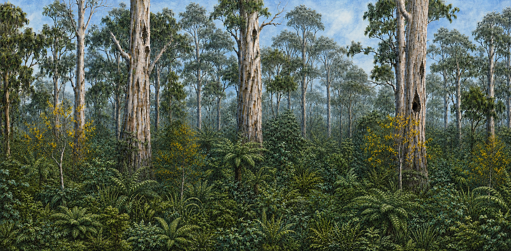
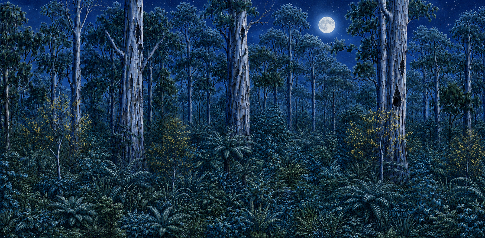

Turning Data into Graphs
Graphs help scientists turn a table of numbers into a picture that makes patterns, comparisons and parts of a whole easier to see.
Learning objective
We are learning how to choose, build and read different kinds of graphs.
Success criteria
- I can explain what the x-axis and y-axis show.
- I can use a line graph or bar graph to represent data.
- I can explain how a pie chart shows parts of one whole.
Think like a scientist
Different graphs answer different questions
A graph is not just decoration. Scientists choose a graph based on what they want the reader to notice.
📈 Change
Use a line graph when the order between x-values matters and you want to see a trend.
📊 Compare
Use a bar graph when you want to compare separate categories.
🥧 Whole
Use a pie chart when all categories are parts of the same total.
2. Compare Categories with a Bar Graph
A bar graph answers a different question: which category has more, less, highest or lowest? The bars stay separate because the categories are separate.
Build the bars from the data
Example: average bounce height of the same ball on four different surfaces.
Bar height is what we compare, so using zero as the baseline keeps the visual comparison fair.
Ball bounce height
Build the bars one at a time, then compare their heights.
Bars are separate
The gap signals that carpet and grass are different categories, not values between each other.
Height carries meaning
Taller bar = larger amount. Students can compare before reading the exact numbers.
Ask comparison questions
Which is highest? Lowest? How much higher? These are natural bar-graph questions.
Build the Bars
Translate a data table into bar heights, then use the graph to compare categories.


Each block is one animal you found
Students counted 5 types of animals found in a forest. Use the table to set the height of each bar.
| Type of Animal | Animals found |
|---|---|
| Leadbeater's Possum | 12 |
| Yellow Bellied Glider | 7 |
| Ringtail Possum | 18 |
| Powerful Owl | 3 |
| Feral Cats | 3 |
Your bar graph
Each slider changes one category without changing the others.
How many more yellow bellied gliders were found than ringtail possums?
🔎 Graph Detective
This graph makes a small difference look enormous. What is wrong?
Part B · Learn How to Construct a Bar Graph
Your team repeated the nocturnal-animal survey on three nights. Use the repeated counts to calculate an average, then turn those averages into a bar graph one category at a time.
Three nights of spotlighting
Night 1 is the count from the spotlighting activity above. The other two nights are repeat surveys. Calculate the average number seen for each animal before you graph the data.
| Type of animal | Night 1 | Night 2 | Night 3 | Average |
|---|
Build the graph labels
Drag the two correct labels from the bank onto the dashed spaces on the graph. The x-axis shows the categories; the y-axis shows what was counted.
Unit check: Do these axis labels need a measurement unit such as cm or seconds?
Average nocturnal animals observed
First label the graph. Then you will construct each bar from its plotted point.
Quick bar-graph check
The graph was built using the same construction rules for every category.
What does your bar graph tell you?
Use the finished graph to compare the average number of animals observed.
Which animal was found in the highest average number?
On average, how many Leadbeater's Possums were observed?
Which animal was found in the lowest average number?
These are your results before nest boxes
Keep this result in mind. These counts describe the forest before nest boxes were installed. Later, you will return two years after the conservation action and compare the new survey results with this baseline.
Part C · Your Turn: Return to the Forest
Your ranger team returns to the same forest
Nest boxes have been installed. Your team repeats the same nocturnal-animal survey over three nights. This time, you will build the follow-up bar graph more independently.
Survey results after nest boxes
The averages have already been calculated. Use the Average column when you build each bar.
| Type of animal | Night 1 | Night 2 | Night 3 | Average |
|---|
Set up your bar graph
Use the table to decide what belongs on the x-axis and y-axis. Drag the correct labels onto the graph.
Do these axes need a measurement unit? Check the data before the graph is revealed.
Follow-up nocturnal animal survey
Label the axes first. The categories and scale will appear when the graph is ready.
What does the follow-up survey show?
Use the graph you constructed. The relevant bars will highlight as you answer.
Which animal was found in the highest average number?
Which animal was found in the lowest average number?
What is the difference between the highest and lowest average counts?
You now have a second set of results
Part D · Compare Before and After
Put the baseline and follow-up results on one graph
You have already graphed the forest before nest boxes and two years later. Now add the second set of bars so the two surveys can be compared directly.
Comparison data
You only need the average from each survey now. Use the Two years later column to add the new bars.
| Type of animal | Before nest boxes | Two years later |
|---|
Build the follow-up bars beside the baseline
The purple bars are already on the graph. Use the sliders to add the green bars for the survey two years later.
Each animal now has a pair of bars, so you can compare before and after directly.
Before and after nest boxes
The baseline bars are already shown. Add the follow-up bars beside them.
What changed after the nest boxes were installed?
Use the two bars for each animal to compare the baseline and follow-up surveys.
What happened to the average number of Leadbeater's Possums?
By how many animals did the Leadbeater's Possum average change?
Did any of the other animal categories change between the two surveys?
Return to the Project Possum prediction
If we provide nest boxes, then the number of Leadbeater's Possums living in this section of forest will increase.
Do these results support the prediction?
Use the two data sets to describe the result
Why use two bars for each animal?
Putting the surveys side by side makes changes between the same categories easier to see.